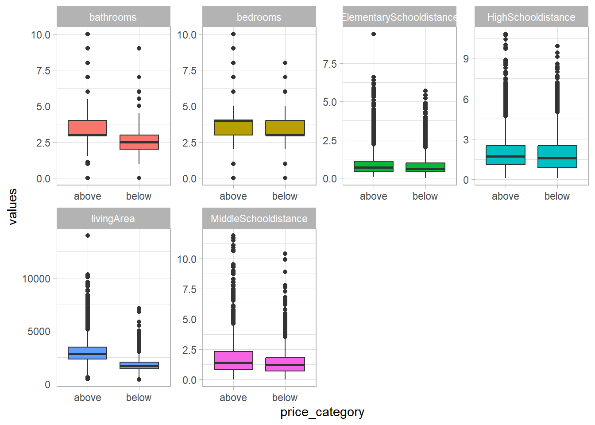
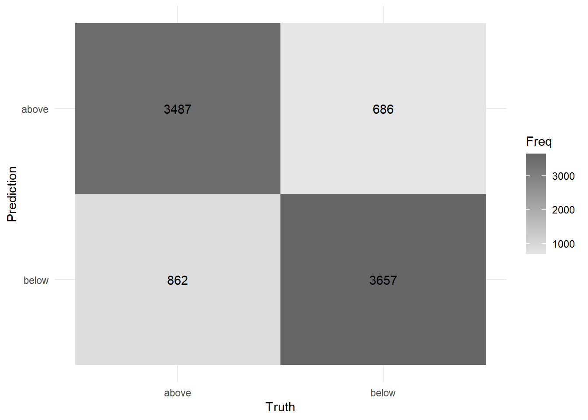
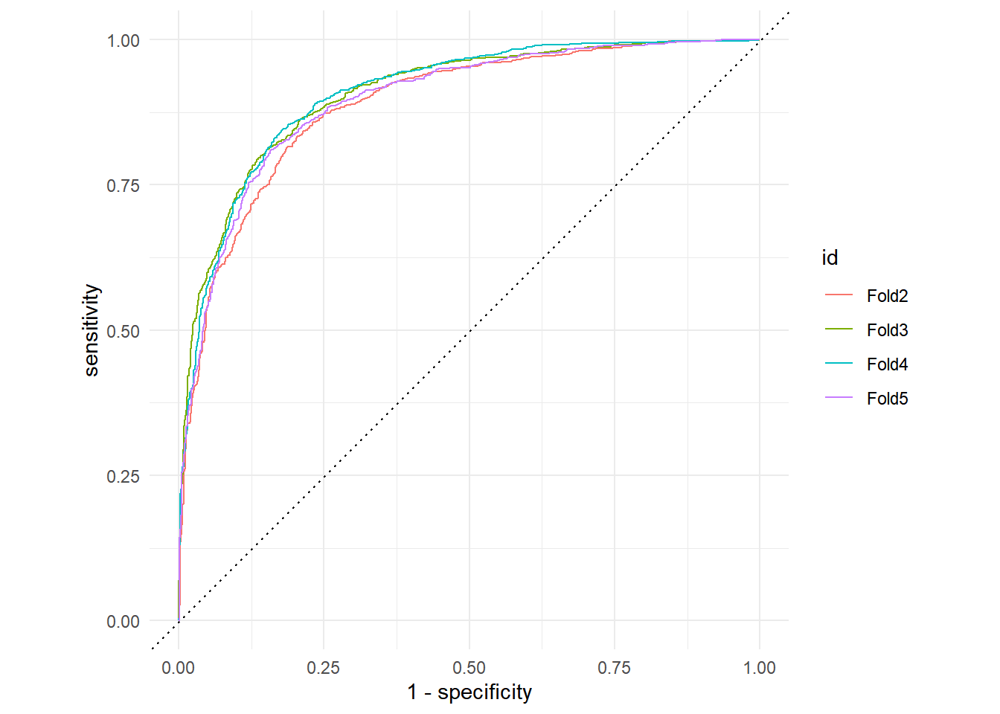
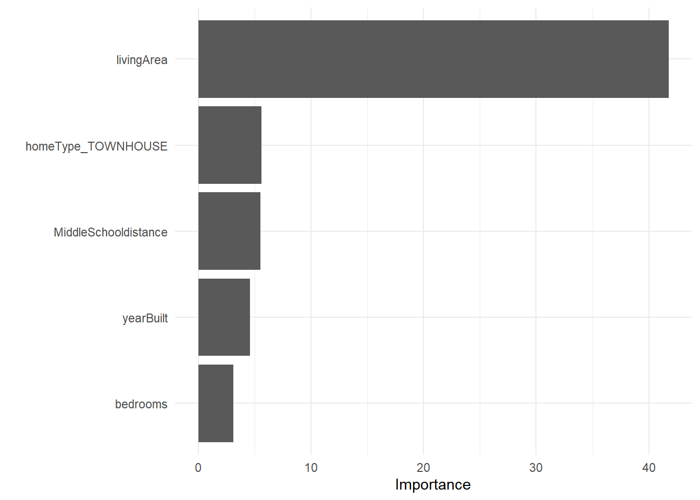

raw_pdx <- read.csv("https://raw.githubusercontent.com/karolo89/Raw_Data/main/PORTLAND%20HOUSE.csv", stringsAsFactors=TRUE)House Prices in Portland, OR
Background
The goal is to build a classification model to predict the type of median housing prices in Portland, OR and its metropolitan area.
Get the Data
Prepare the Data
This data has 25731 obs. of 32 variables
## raw_pdx <- raw_pdx%>%select(-id)
head(raw_pdx) id yearBuilt City latitude longitude zipcode bathrooms bedrooms
1 1 2007 Fairview 45.54357 -122.4418 97024 3 3
2 2 2001 Fairview 45.54758 -122.4532 97024 3 3
3 3 1982 Gresham 45.48823 -122.4444 97080 3 4
4 4 1953 Portland 45.52663 -122.4641 97230 1 3
5 5 1967 Gresham 45.51124 -122.4315 97030 3 6
6 6 1967 Gresham 45.48799 -122.4162 97080 2 3
DateListed DateSold daysOnZillow homeType lastSoldPrice livingArea
1 4/26/2021 5/21/2021 25 TOWNHOUSE 315400 1806
2 3/1/2021 4/23/2021 53 SINGLE_FAMILY 400000 1518
3 5/24/2021 6/4/2021 11 SINGLE_FAMILY 512000 2724
4 5/24/2021 6/4/2021 11 SINGLE_FAMILY 348000 1217
5 5/18/2021 6/1/2021 14 APARTMENT 510000 2400
6 5/18/2021 6/1/2021 14 SINGLE_FAMILY 404200 1150
lotSize price priceHistory.1.price propertyTaxRate hasCooling hasFireplace
1 1555 315400 212000 1.12 FALSE TRUE
2 3484 400000 375000 1.12 TRUE TRUE
3 9583 512000 479000 1.12 TRUE TRUE
4 13939 348000 339500 1.12 NA TRUE
5 8545 510000 252450 1.12 TRUE NA
6 7000 404200 204500 1.12 FALSE TRUE
hasGarage hasHeating hasView ElementarySchooldistance ElementarySchools
1 FALSE TRUE FALSE 0.4 Elementary
2 FALSE TRUE TRUE 1.2 Elementary
3 FALSE TRUE TRUE 0.8 Elementary
4 FALSE TRUE FALSE 0.8 Elementary
5 FALSE TRUE FALSE 0.3 Elementary
6 FALSE TRUE FALSE 0.4 Elementary
ElementarySchoolrating MiddleSchooldistance schoolsMiddlelevel
1 5 1.1 Middle
2 5 1.0 Middle
3 5 1.7 Middle
4 2 0.7 Middle
5 2 0.9 Middle
6 2 0.4 Middle
MiddleSchoolsrating HighSchooldistance HighSchoollevel HighSchoolRating
1 2 2.6 High 3
2 2 3.4 High 3
3 6 1.4 High 3
4 2 3.8 High 3
5 6 0.3 High 3
6 6 1.4 High 3# convert variables
raw_pdx <- raw_pdx %>%
mutate(
yearBuilt = as.numeric(yearBuilt),
bathrooms = as.numeric(bathrooms),
bedrooms = as.numeric(bedrooms),
daysOnZillow = as.numeric(daysOnZillow),
lastSoldPrice = as.numeric(lastSoldPrice ),
livingArea = as.numeric(livingArea),
lotSize= as.numeric(lotSize),
price = as.numeric(price),
priceHistory.1.price= as.numeric(priceHistory.1.price),
ElementarySchoolrating = as.factor(ElementarySchoolrating),
MiddleSchoolsrating = as.factor(MiddleSchoolsrating),
HighSchoolRating= as.factor(HighSchoolRating),
zipcode = as.factor(zipcode)
)Missing data
is.na(raw_pdx) %>% colSums() id yearBuilt City
0 546 0
latitude longitude zipcode
13 13 0
bathrooms bedrooms DateListed
484 770 0
DateSold daysOnZillow homeType
0 6 0
lastSoldPrice livingArea lotSize
0 465 2890
price priceHistory.1.price propertyTaxRate
0 1419 11
hasCooling hasFireplace hasGarage
4496 4624 0
hasHeating hasView ElementarySchooldistance
1 0 25
ElementarySchools ElementarySchoolrating MiddleSchooldistance
0 25 36
schoolsMiddlelevel MiddleSchoolsrating HighSchooldistance
0 36 2242
HighSchoollevel HighSchoolRating
0 2242 clean_data <- raw_pdx %>%
filter(!is.na(yearBuilt))%>%
filter(!is.na(longitude))%>%
filter(!is.na(bedrooms))%>%
filter(!is.na(daysOnZillow))%>%
filter(!is.na(livingArea))%>%
filter(!is.na(priceHistory.1.price))%>%
filter(!is.na(hasFireplace))%>%
filter(!is.na(latitude))%>%
filter(!is.na(hasHeating))%>%
filter(!is.na(hasCooling))%>%
filter(!is.na(bathrooms))%>%
filter(!is.na(lotSize))%>%
filter(!is.na(propertyTaxRate))%>%
filter(!is.na(ElementarySchooldistance))%>%
filter(!is.na(MiddleSchooldistance))%>%
filter(!is.na(HighSchooldistance))%>%
filter(!is.na(ElementarySchoolrating))%>%
filter(!is.na(MiddleSchoolsrating))%>%
filter(!is.na(HighSchoolRating))summary(clean_data) id yearBuilt City latitude
Min. : 1 Min. : 0 Portland :5232 Min. :45.26
1st Qu.: 6207 1st Qu.:1965 Beaverton :1456 1st Qu.:45.42
Median :15156 Median :1989 Hillsboro :1194 Median :45.47
Mean :13622 Mean :1981 Lake Oswego: 942 Mean :45.47
3rd Qu.:20440 3rd Qu.:2003 Tigard : 913 3rd Qu.:45.52
Max. :25730 Max. :2021 Gresham : 845 Max. :45.62
(Other) :3906
longitude zipcode bathrooms bedrooms
Min. :-123.1 97229 : 834 Min. : 0.00 Min. : 0.000
1st Qu.:-122.8 97045 : 713 1st Qu.: 2.00 1st Qu.: 3.000
Median :-122.7 97007 : 706 Median : 3.00 Median : 3.000
Mean :-122.7 97086 : 632 Mean : 2.78 Mean : 3.568
3rd Qu.:-122.6 97123 : 599 3rd Qu.: 3.00 3rd Qu.: 4.000
Max. :-122.3 97068 : 573 Max. :10.00 Max. :10.000
(Other):10431
DateListed DateSold daysOnZillow homeType
8/9/2019 : 71 5/28/2021 : 159 Min. : 1 APARTMENT : 38
6/4/2021 : 66 6/30/2021 : 142 1st Qu.: 80 CONDO : 136
3/30/2021: 65 10/30/2020: 137 Median :192 HOME_TYPE_UNKNOWN: 2
8/6/2019 : 64 7/31/2020 : 128 Mean :187 SINGLE_FAMILY :13659
8/19/2019: 62 4/30/2021 : 127 3rd Qu.:294 TOWNHOUSE : 653
8/23/2019: 60 9/30/2020 : 122 Max. :422
(Other) :14100 (Other) :13673
lastSoldPrice livingArea lotSize price
Min. : 443 Min. : 416 Min. : 0 Min. : 500
1st Qu.: 450000 1st Qu.: 1664 1st Qu.: 4791 1st Qu.: 450000
Median : 551000 Median : 2206 Median : 7405 Median : 551000
Mean : 634458 Mean : 2399 Mean : 17065 Mean : 634827
3rd Qu.: 710000 3rd Qu.: 2892 3rd Qu.: 10018 3rd Qu.: 710000
Max. :6300000 Max. :14014 Max. :18992160 Max. :6300000
priceHistory.1.price propertyTaxRate hasCooling hasFireplace
Min. : 895 Min. :1.010 Mode :logical Mode :logical
1st Qu.: 415000 1st Qu.:1.080 FALSE:807 FALSE:645
Median : 525000 Median :1.120 TRUE :13681 TRUE :13843
Mean : 594080 Mean :1.113
3rd Qu.: 679992 3rd Qu.:1.130
Max. :6888000 Max. :1.130
hasGarage hasHeating hasView ElementarySchooldistance
Mode :logical Mode :logical Mode :logical Min. :0.0000
FALSE:14150 FALSE:24 FALSE:8574 1st Qu.:0.4000
TRUE :338 TRUE :14464 TRUE :5914 Median :0.6000
Mean :0.8057
3rd Qu.:1.0000
Max. :9.4000
ElementarySchools ElementarySchoolrating MiddleSchooldistance
: 0 7 :2862 Min. : 0.000
Elementary:13077 5 :2359 1st Qu.: 0.800
Primary : 1411 6 :2323 Median : 1.300
8 :1606 Mean : 1.546
3 :1368 3rd Qu.: 2.100
4 :1332 Max. :11.900
(Other):2638
schoolsMiddlelevel MiddleSchoolsrating HighSchooldistance HighSchoollevel
: 0 5 :2347 Min. : 0.100 : 0
Elementary: 3 8 :2262 1st Qu.: 1.000 High:14488
High : 0 3 :2238 Median : 1.700
Middle :14485 6 :2104 Mean : 1.911
7 :1655 3rd Qu.: 2.500
4 :1595 Max. :10.800
(Other):2287
HighSchoolRating
5 :3804
8 :2365
3 :1962
6 :1787
9 :1746
4 :1230
(Other):1594 clean_data <-
clean_data %>%
mutate(price_category = case_when(
price < 551000 ~ "below",
price >= 551000 ~ "above")) %>%
mutate(price_category = as.factor(price_category)) Take a look at the Data
clean_data %>%
count(price_category,
name ="total") %>%
mutate(percent = total/sum(total)*100,
percent = round(percent, 2)) %>%
gt() %>%
tab_header(
title = "Portland, OR and its Metropolitan Area Median House Prices",
subtitle = "Above and below 551,000$"
) %>%
cols_label(
price_category = "Price",
total = "Total",
percent = "Percent"
) %>%
fmt_number(
columns = vars(total),
suffixing = TRUE
) Warning: Since gt v0.3.0, `columns = vars(...)` has been deprecated.
• Please use `columns = c(...)` instead.
Since gt v0.3.0, `columns = vars(...)` has been deprecated.
• Please use `columns = c(...)` instead.| Portland, OR and its Metropolitan Area Median House Prices | ||
| Above and below 551,000$ | ||
| Price | Total | Percent |
|---|---|---|
| above | 7.25K | 50.02 |
| below | 7.24K | 49.98 |
qmplot(x = longitude,
y = latitude,
data = clean_data,
geom = "point",
color = price_category,
alpha = 0.4) +
scale_alpha(guide = 'none')ℹ Using `zoom = 10`ℹ Map tiles by Stamen Design, under CC BY 3.0. Data by OpenStreetMap, under ODbL.
houses_pdx <-
clean_data %>%
select( # select our predictors
longitude,
latitude,
price_category,
bathrooms,
yearBuilt,
homeType,
bedrooms,
livingArea,
lotSize,
MiddleSchooldistance,
ElementarySchooldistance,
HighSchooldistance)
glimpse(houses_pdx)Rows: 14,488
Columns: 12
$ longitude <dbl> -122.4418, -122.4532, -122.4444, -122.4162, -…
$ latitude <dbl> 45.54357, 45.54758, 45.48823, 45.48799, 45.49…
$ price_category <fct> below, below, below, below, below, below, bel…
$ bathrooms <dbl> 3.0, 3.0, 3.0, 2.0, 2.0, 2.0, 3.0, 3.0, 3.0, …
$ yearBuilt <dbl> 2007, 2001, 1982, 1967, 1978, 2018, 2006, 201…
$ homeType <fct> TOWNHOUSE, SINGLE_FAMILY, SINGLE_FAMILY, SING…
$ bedrooms <dbl> 3, 3, 4, 3, 3, 4, 3, 3, 4, 4, 3, 2, 4, 3, 4, …
$ livingArea <dbl> 1806, 1518, 2724, 1150, 2036, 1947, 1548, 220…
$ lotSize <dbl> 1555, 3484, 9583, 7000, 6969, 4791, 5009, 522…
$ MiddleSchooldistance <dbl> 1.1, 1.0, 1.7, 0.4, 2.1, 2.5, 0.5, 1.8, 0.3, …
$ ElementarySchooldistance <dbl> 0.4, 1.2, 0.8, 0.4, 1.0, 0.3, 0.5, 1.0, 0.1, …
$ HighSchooldistance <dbl> 2.6, 3.4, 1.4, 1.4, 1.4, 2.2, 1.5, 1.4, 0.9, …pdx_long <- houses_pdx %>%
select(-longitude,-latitude, -homeType, -yearBuilt, -lotSize)%>%
pivot_longer(!price_category, names_to = "features", values_to = "values")
# Print the first 10 rows
pdx_long %>%
slice_head(n = 10)# A tibble: 10 × 3
price_category features values
<fct> <chr> <dbl>
1 below bathrooms 3
2 below bedrooms 3
3 below livingArea 1806
4 below MiddleSchooldistance 1.1
5 below ElementarySchooldistance 0.4
6 below HighSchooldistance 2.6
7 below bathrooms 3
8 below bedrooms 3
9 below livingArea 1518
10 below MiddleSchooldistance 1 theme_set(theme_light())
# Make a box plot for each predictor feature
pdx_long %>%
ggplot(mapping = aes(x = price_category, y = values, fill = features)) +
geom_boxplot() +
facet_wrap(~ features, scales = "free", ncol = 4) +
scale_color_viridis_d(option = "plasma", end = .7) +
theme(legend.position = "none")
Data Splitting
# Fix the random numbers by setting the seed
# This enables the analysis to be reproducible
set.seed(504)
# Put 3/4 of the data into the training set
data_split <- initial_split(houses_pdx,
prop = 3/4)
# Create dataframes for the two sets:
train_data <- training(data_split)
test_data <- testing(data_split)Validaton Set
house_folds <-
vfold_cv(train_data,
v = 5,
strata = price_category) pdx_rec <-
recipe(price_category ~ .,
data = train_data) %>%
update_role(longitude, latitude,
new_role = "ID") %>%
step_naomit(everything(), skip = TRUE) %>%
step_novel(all_nominal(), -all_outcomes()) %>% # converts all nominal variables to factors and takes care of other issues related to categorical variables.
step_normalize(all_numeric(), -all_outcomes(),
-longitude, -latitude) %>% # step_normalize() normalizes (center and scales) the numeric variables to have a standard deviation of one and a mean of zero
step_dummy(all_nominal(), -all_outcomes()) %>% #converts our factor columns into numeric binary (0 and 1) variables.
step_zv(all_numeric(), -all_outcomes()) %>% ## step_zv(): removes any numeric variables that have zero variance.
step_corr(all_predictors(), threshold = 0.7, method = "spearman") # step_corr(): will remove predictor variables that have large correlations with other predictor variables.summary(pdx_rec)# A tibble: 12 × 4
variable type role source
<chr> <list> <chr> <chr>
1 longitude <chr [2]> ID original
2 latitude <chr [2]> ID original
3 bathrooms <chr [2]> predictor original
4 yearBuilt <chr [2]> predictor original
5 homeType <chr [3]> predictor original
6 bedrooms <chr [2]> predictor original
7 livingArea <chr [2]> predictor original
8 lotSize <chr [2]> predictor original
9 MiddleSchooldistance <chr [2]> predictor original
10 ElementarySchooldistance <chr [2]> predictor original
11 HighSchooldistance <chr [2]> predictor original
12 price_category <chr [3]> outcome originalprep_data <-
pdx_rec %>% # use the recipe object
prep() %>% # perform the recipe on training data
juice() # extract only the preprocessed dataframe The Model- Logistic regression
log_spec <- # your model specification
logistic_reg() %>% # model type
set_engine(engine = "glm") %>% # model engine
set_mode("classification") # model mode
# Show your model specification
log_specLogistic Regression Model Specification (classification)
Computational engine: glm pdx_wflow <- # new workflow object
workflow() %>% # use workflow function
add_recipe(pdx_rec) %>% # use the new recipe
add_model(log_spec) # add your model spec
pdx_wflow══ Workflow ════════════════════════════════════════════════════════════════════
Preprocessor: Recipe
Model: logistic_reg()
── Preprocessor ────────────────────────────────────────────────────────────────
6 Recipe Steps
• step_naomit()
• step_novel()
• step_normalize()
• step_dummy()
• step_zv()
• step_corr()
── Model ───────────────────────────────────────────────────────────────────────
Logistic Regression Model Specification (classification)
Computational engine: glm # save model coefficients for a fitted model object from a workflow
get_model <- function(x) {
pull_workflow_fit(x) %>% tidy()
}
# same as before with one exception
log_res_2 <-
pdx_wflow %>%
fit_resamples(
resamples = house_folds,
metrics = metric_set(
recall, precision, f_meas,
accuracy, kap,
roc_auc, sens, spec),
control = control_resamples(
save_pred = TRUE,
extract = get_model) # use extract and our new function
)
## All of the results can be flattened and collected using:
all_coef <- map_dfr(log_res_2$.extracts, ~ .x[[1]][[1]])
filter(all_coef, term == "bedrooms")# A tibble: 4 × 5
term estimate std.error statistic p.value
<chr> <dbl> <dbl> <dbl> <dbl>
1 bedrooms 0.129 0.0433 2.99 0.00284
2 bedrooms 0.116 0.0423 2.74 0.00623
3 bedrooms 0.118 0.0425 2.78 0.00550
4 bedrooms 0.147 0.0430 3.42 0.000618Performance metrics
Show performance for every single fold:
log_res_2 %>% collect_metrics(summarize = FALSE)# A tibble: 32 × 5
id .metric .estimator .estimate .config
<chr> <chr> <chr> <dbl> <chr>
1 Fold2 recall binary 0.783 Preprocessor1_Model1
2 Fold2 precision binary 0.824 Preprocessor1_Model1
3 Fold2 f_meas binary 0.803 Preprocessor1_Model1
4 Fold2 accuracy binary 0.808 Preprocessor1_Model1
5 Fold2 kap binary 0.615 Preprocessor1_Model1
6 Fold2 sens binary 0.783 Preprocessor1_Model1
7 Fold2 spec binary 0.832 Preprocessor1_Model1
8 Fold2 roc_auc binary 0.887 Preprocessor1_Model1
9 Fold3 recall binary 0.806 Preprocessor1_Model1
10 Fold3 precision binary 0.843 Preprocessor1_Model1
# … with 22 more rowsCollect predictions
To obtain the actual model predictions, we use the function collect_predictions and save the result as log_pred:
log_pred <-
log_res_2 %>%
collect_predictions()
log_pred %>%
conf_mat(price_category, .pred_class) Truth
Prediction above below
above 3487 686
below 862 3657log_pred %>%
conf_mat(price_category, .pred_class) %>%
autoplot(type = "heatmap")+
theme_minimal()
ROC Curve
log_pred %>%
group_by(id) %>% # id contains our folds
roc_curve(price_category, .pred_above) %>%
autoplot()+
theme_minimal()
Use the workflow to train our model
pdx_fit <- fit(pdx_wflow, train_data)This allows us to use the model trained by this workflow to predict labels for our test set, and compare the performance metrics with the basic model we created previously.
pdx_fit %>% ## display results
pull_workflow_fit() %>%
tidy()%>%
filter(p.value < 0.05)# A tibble: 8 × 5
term estimate std.error statistic p.value
<chr> <dbl> <dbl> <dbl> <dbl>
1 (Intercept) -0.426 0.0296 -14.4 5.43e-47
2 yearBuilt 0.221 0.0482 4.59 4.49e- 6
3 bedrooms 0.119 0.0381 3.12 1.82e- 3
4 livingArea -2.88 0.0689 -41.8 0
5 lotSize -0.0448 0.0202 -2.21 2.68e- 2
6 MiddleSchooldistance -0.171 0.0310 -5.52 3.33e- 8
7 HighSchooldistance 0.0805 0.0303 2.66 7.86e- 3
8 homeType_TOWNHOUSE 0.998 0.179 5.59 2.24e- 8library(vip)
pdx_fit %>%
extract_fit_parsnip() %>%
vip(num_features = 5)+
theme_minimal()
The two most important predictors in whether the median house value is above or below 551,000 dollars were the Living Area and the home type: Townhouse
# Make predictions on the test set
pred_results <- test_data %>%
select(price_category) %>%
bind_cols(pdx_fit %>%
predict(new_data = test_data)) %>%
bind_cols(pdx_fit %>%
predict(new_data = test_data, type = "prob"))
# Print the results
pred_results %>%
slice_head(n = 10) price_category .pred_class .pred_above .pred_below
1 below above 0.79554296 0.2044570
2 below below 0.26469350 0.7353065
3 below below 0.47600771 0.5239923
4 below below 0.02353063 0.9764694
5 below below 0.06272184 0.9372782
6 below below 0.10491967 0.8950803
7 below below 0.06923625 0.9307637
8 below below 0.03314398 0.9668560
9 below below 0.04580355 0.9541965
10 below above 0.83998089 0.1600191Let’s take a look at the confusion matrix:
pred_results%>%
conf_mat(price_category, .pred_class) %>%
autoplot(type = "heatmap")+
theme_minimal()Evaluate other desired metrics
eval_metrics <- metric_set(ppv, recall, accuracy, f_meas)
eval_metrics(data = pred_results, truth = price_category, estimate = .pred_class)# A tibble: 4 × 3
.metric .estimator .estimate
<chr> <chr> <dbl>
1 ppv binary 0.820
2 recall binary 0.792
3 accuracy binary 0.809
4 f_meas binary 0.806pred_results %>%
roc_auc(price_category, .pred_above)# A tibble: 1 × 3
.metric .estimator .estimate
<chr> <chr> <dbl>
1 roc_auc binary 0.895Make a roc_chart
Let’s create the ROC curve. Again, since the event we are predicting is the first level in the price_category factor (“above”), we provide roc_curve() with the relevant class probability .pred_above:
pred_results %>%
roc_curve(truth = price_category, .pred_above) %>%
autoplot()+
theme_minimal()
Reference
Tidymodels- https://www.tidymodels.org/